Yonago, Tottori: things to do, food and stays
Yonago · Tottori
Yonago
Highlighted on the Tottori map.
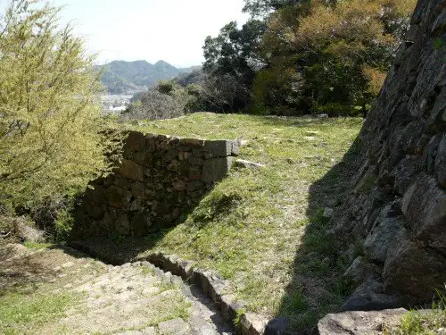
Stay
やど紫苑亭
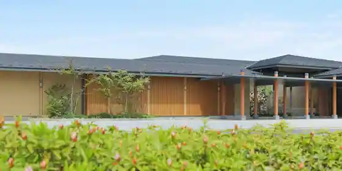
Yado Shion Tei
Inn at Yonagoshikaike Onsen in Kaikeonsen, Yonago.
皆生游月
Kaike Yu Gatsu
Inn at Yonagoshikaike Onsen in Kaikeonsen, Yonago with open-air baths and scenic views.
皆生グランドホテル天水
Kaike Grand Hotel Tensui
Hotel at Yonagoshikaike Onsen in Kaikeonsen, Yonago with buffet meals and scenic views.
皆生風雅
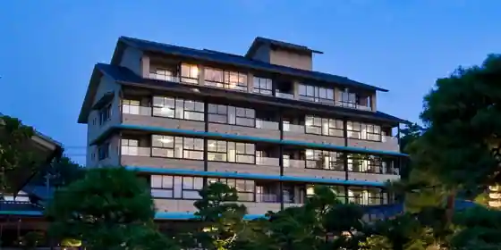
Kaike Fuga
Inn at Tanoshimushizukana Onsen in Kaikeonsen, Yonago.
海辺の宿 皆生菊乃家
Umibe No Yado Kaike Kikuno Ie
Inn at Kaike Onsen in Kaikeonsen, Yonago with kaiseki dinners.
ホテルハーベストイン米子
Hotel Habesutoin Yonago
ホテルルートイン米子
Hotel Route Inn Yonago
Hotel at Danjobetsutennen Onsen in Koji, Yonago with a large communal bath.
グリーンリッチホテル米子駅前（人工温泉 二股湯の華）
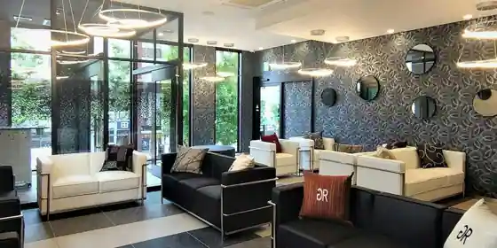
Gurinritchi Hotel Yonago Ekimae (Jinko Onsen Futamata Yu No Hana)
Hotel at Jinko Onsen in Meiji, Yonago with a large communal bath; 3-minute walk from Jryonago Station.
湯喜望 白扇
Yu Kibo Hakusen
Inn at Yonagoshikaike Onsen in Kaikeonsen, Yonago.
ベイサイドスクエア 皆生ホテル
Beisaidosukuea Kaike Hotel
Hotel at Umiwonozomubihada Onsen in Kaikeonsen, Yonago.
華水亭
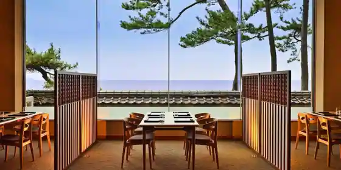
Hana Mizu Tei
Inn at Yonagoshikaike Onsen in Kaikeonsen, Yonago.
皆生松月
Kaike Matsuzuki
Inn at Yonagoshikaike Onsen in Kaikeonsen, Yonago with open-air baths and private baths.
Dining
回転すし北海道 皆生店
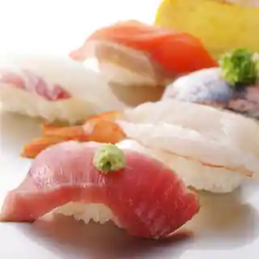
Kaiten Sushi Hokkaido Kaike
まいもんや かっぱ
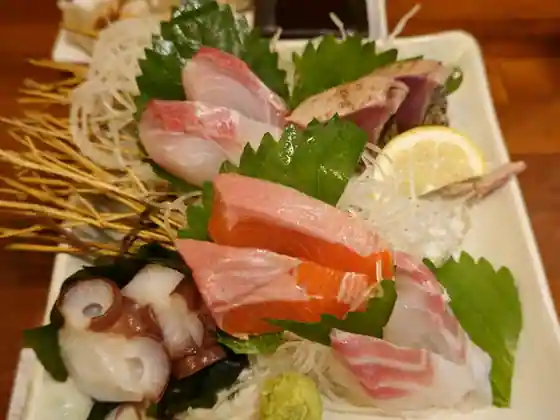
Maimonya Kappa
圭蔵
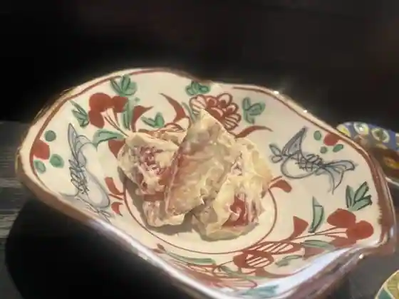
Kei Kura
御手打ちそば やま本
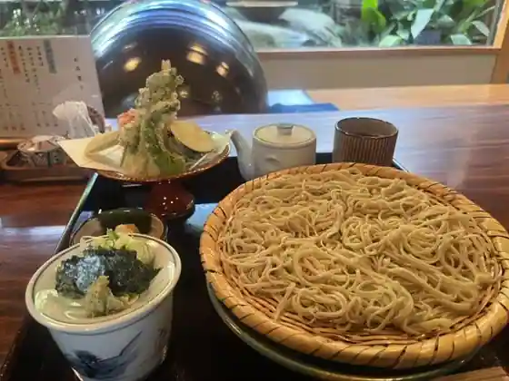
O Teuchi Chisoba Yama Hon
なるこ
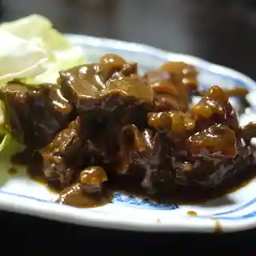
Naruko
桜丸
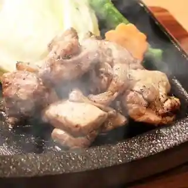
Sakuramaru
麺処 三鈷峰
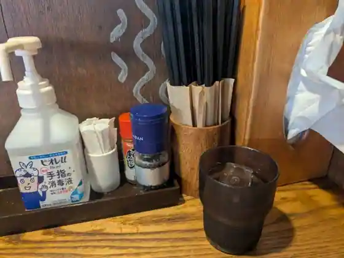
Men Tokoro Sanko Mine
桔梗屋
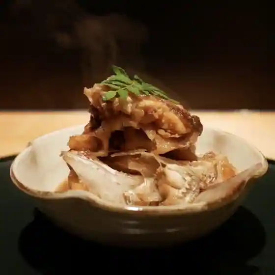
Kikyo Ya
四川中華 GOCHI
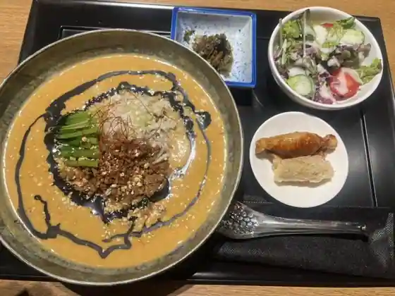
Shisen Chuka GOCHI
鮨 とざき
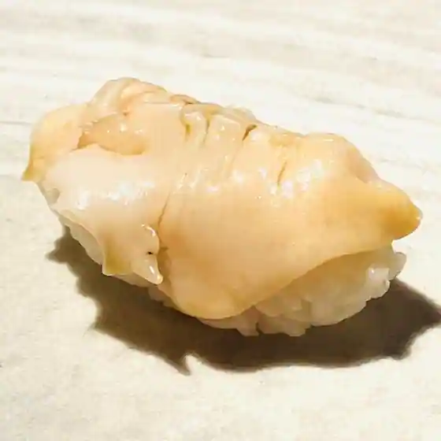
Sushi Tozaki
ラ・リーベラ
Ra Ribera
すし弁慶 道笑町店

Sushi Benkei Michi Warai Machi
麺屋 無双
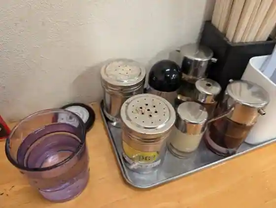
Men Ya Muso
オステリア ヤスダヤ
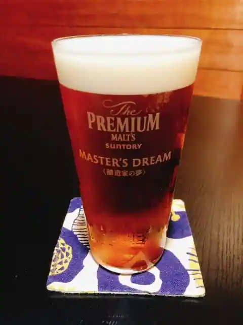
Osuteria Yasudaya
鉄板ふくもと
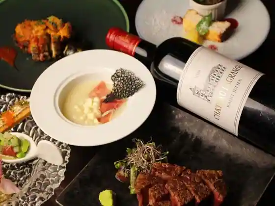
Teppan Fukumoto
アルモニー
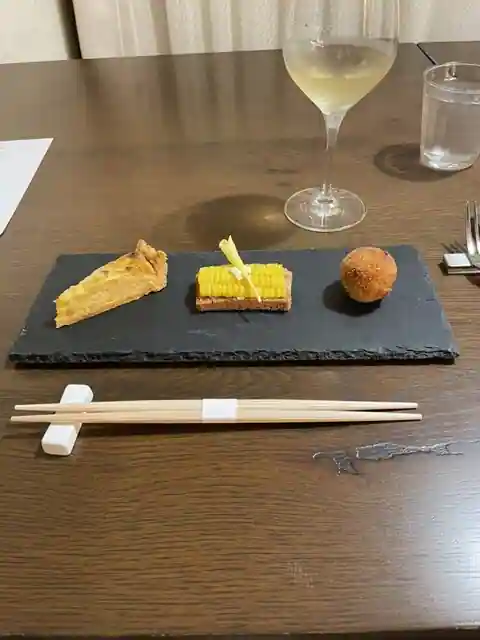
Arumoni
メゾン ド キュー
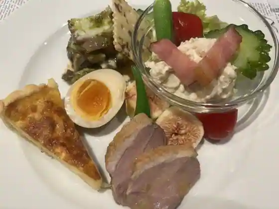
Mezon Do Kyu
ラーメン悟空
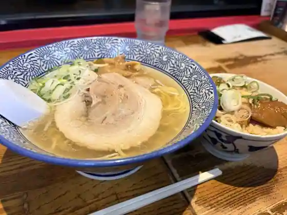
Ramen Goku
Tokyo食堂
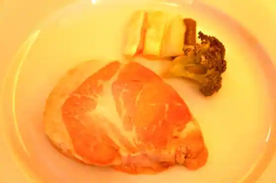
Tokyo Shokudo
カルーソ
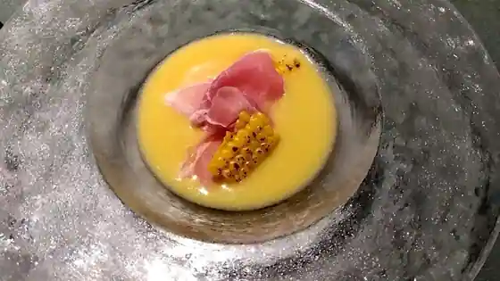
Karuso
和食居酒屋 旬門 米子本店
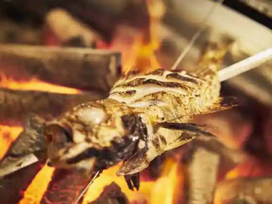
Washoku Izakaya Jun Mon Yonago Hon
とんきん
Tonkin
さんぽう
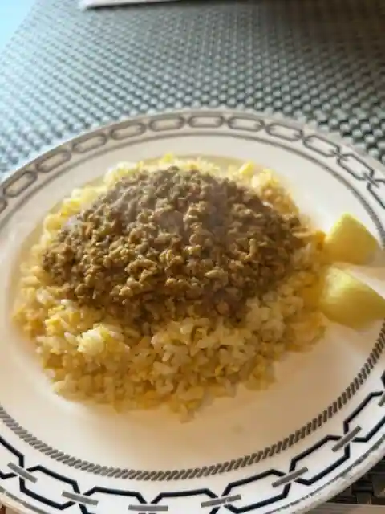
Sanpo
Sights
Kaike Onsen
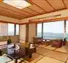
O Kashi no Hisashi Shiro
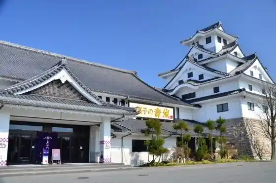
Yonago Castle Ruins
Tomi Masu Shrine
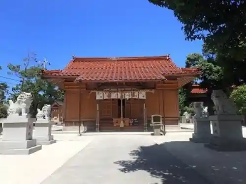
Kaike Onsen no Ashiyu
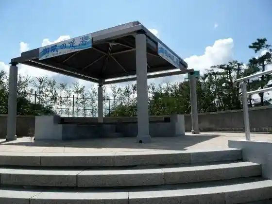
Kaike Onsen Shrine
Yonago Mizutori Park
Awashima Shrine
Wa Kasa Densho Kan
Hiyoshi Shrine
Hoki Kodai no Oka Park
Minato Yama Park
Goto Ie House
Kamogawa Nakaumi Yuran
Ten no Manai
Kaike Onsen Kaiyu Beach (Kyu Kaike Onsen Beach)
Fuku City Iseki Fuku City Shiseki Park
Kamogawa Soi no Fukei
Daijin Yama Shrine (Honsha)
Waku Waku Tennen Onsen Rapisupa
Motomiya no Izumi
Oyu Land
Moto Otori Furusato Kan Te Shigoto Gyararii Kaike
Ue Yodo Haiji Ato
Kaike Onsen Shiikayakku
Kanko Fisshingu
Yodoe Donguri Village
Hakuho Village (Yodoe Yume Onsen)
Kanko Kurujingu
Yonago Tateyama In Rekishikan
Kodai Taiken Kosu
Yonago Shita Town Rekishi Fureai Machi Aruki
Yonago Yakusho